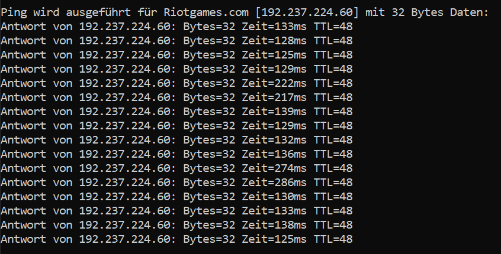

{kind=link}
{kind=link}
{kind=link}
Wenn das Riotgames.com ist? dann hab ich das bei mir gerade getestet.
Der liefert stabile 100 bis 120 ms ohne große Ausreißer....
Ja sorry, dann bin ich mit meinem Latein am Ende....

Hallo,
kann mir jemand helfen.
Ich habe einen 5G Vertrag, den Gigakraft 500. Den Besten Vertrag den ich in meiner Gegend bekomme.
Allerdings sind wir enttäuscht da aufgrund eines hohen Pings Spiele wie LoL unspielbar sind.
Habe schon verschiedenes probiert:
- APN verändert
- Firewall deaktiviert/umgestellt
- Gameports(Virtuelle Server)
- optimalen Standort des Modems gesucht
An WLAN kann es nicht liegen bin mit LAN verbunden.
Bearbeitet von DomaineggHallo @Domainegg und willkommen in der Magenta Community,
Wie hoch sind die Schwankungen?
Treten diese auch außerhalb der Primetime (vor 18 Uhr) auf?
Wie sind die Empfangswerte im Webinterface?
Die Pingzeiten würden mich auch interessieren.
Aber ich kann bestätigen, dass auch ich bei 4G seit ein paar Wochen auch größere Schwankungen erkennen kann.
Ich tippe da auf teils hohe Auslastungen im Netz - wegen Schulbeginn, Herbst...
Teils hab ich beim Dauerping sogar einzelne Ausfälle......
Am 8.10.2021 um 17:09 schrieb Rexalius2000:Hallo @Domainegg und willkommen in der Magenta Community,
Wie hoch sind die Schwankungen?
Treten diese auch außerhalb der Primetime (vor 18 Uhr) auf?
Wie sind die Empfangswerte im Webinterface?
Hallo @Rexalius2000 ,
Also zuerst ist der Ping schon etwas erhöht bei ca. 60ms, dieser kann dann gerne mal bis zu 170-200ms steigen.
Dies passiert immer egal welche Zeit.
Also die Standortoptimierung gibt mir immer 100 Punkte, wenn sie Funktioniert...
Und die Schwankungen eher gegen Abend oder auch in der Früh/Vormittag?
Gerade eben schrieb Christian_E:Und die Schwankungen eher gegen Abend oder auch in der Früh/Vormittag?
Wie gesagt egal zu welcher Zeit.
OK, dann ist das Auslastungsthema im Netz eher nicht relevant.
Die Empfangsparamter im 5G Netz sind ok? gut oder sehr gut?
Hast da Werte? Sind im Modem zu finden - im Menü...
vor 2 Minuten schrieb Christian_E:OK, dann ist das Auslastungsthema im Netz eher nicht relevant.
Die Empfangsparamter im 5G Netz sind ok? gut oder sehr gut?
Hast da Werte? Sind im Modem zu finden - im Menü...
OK Danke!
Perfekte Werte, da gibts überhaupt nichts auszusetzen.
SINR ist absolut toll und auch der Signalpegel 1a.
Also auch vom Empfang her tip top...
Da du auch per LAN verbunden ist, können wir auch WLAN ausschließen.
Tja - jetzt wirds eng mit Vorschlägen.
Was erreichst du eigentlich für Downloads?
vor 5 Minuten schrieb Christian_E:OK Danke!
Perfekte Werte, da gibts überhaupt nichts auszusetzen.
SINR ist absolut toll und auch der Signalpegel 1a.
Also auch vom Empfang her tip top...
Da du auch per LAN verbunden ist, können wir auch WLAN ausschließen.
Tja - jetzt wirds eng mit Vorschlägen.
Was erreichst du eigentlich für Downloads?
Ja nicht schlecht hier ein Speedtest Ergebnis...
Für einen 500er Vertrag jetzt auch nicht glänzend
Nur hier geht der Ping ja noch, ist ja auch der nächstgelegene Server.
Allerdings bei Multiplayer Spielen spinnts dann.
Mach doch mal bitte einen Dauerping - auf eine Domain deiner Wahl und schick mal die Werte.
ping xxx.xx -t
Mal so einige Minuten laufen lassen und schau mal, wie die Schwankungen da aussehen.
Vielleicht liegt es ja gar nicht an deinem Account/deinem Internet, sondern an der Erreichbarkeit der Domain des Spieles?
Bearbeitet von Christian_Evor 7 Minuten schrieb Christian_E:Mach doch mal bitte einen Dauerping - auf eine Domain deiner Wahl und schick mal die Werte.
ping xxx.xx -t
Mal so einige Minuten laufen lassen und schau mal, wie die Schwankungen da aussehen.
OK - da sieht man die Ausreißer nach oben.
War das die Spieldomain oder ein Server in der Nähe?
vor 1 Minute schrieb Christian_E:OK - da sieht man die Ausreißer nach oben.
War das die Spieldomain oder ein Server in der Nähe?
Das war google.com
Ich habe versucht den Spieleserver von LoL anzupingen,
jedoch hab ich dort immer timeout keine Ahnung vielleicht falsche IP🤷♂️
Wenn das Riotgames.com ist? dann hab ich das bei mir gerade getestet.
Der liefert stabile 100 bis 120 ms ohne große Ausreißer....
Ja sorry, dann bin ich mit meinem Latein am Ende....

vor 1 Minute schrieb Christian_E:Wenn das Riotgames.com ist? dann hab ich das bei mir gerade getestet.
Der liefert stabile 100 bis 120 ms ohne große Ausreißer....
Ja sorry, dann bin ich mit meinem Latein am Ende....
Ja bei Riotgames.com habe ich diese Ergebnisse:

Allerdings ist das nicht der Gameserver.
Laut meinen Google-Researchern sollten die folgende sein:
NA - ping 104.160.131.3
EUW - ping 104.160.141.3
EUNE - ping 104.160.142.3
OCE - ping 104.160.156.1
LAN - ping 104.160.136.3
BR - ping 104.160.152.3
Ja in etwa kann man das gelten lassen.
Das sieht bei dir auch eher stabil aus.
Dann tippe ich aber schon eher auf ein Problem außerhalb deiner Umgebung.
Ich glaub, dass bei dir soweit alles passt.
Gerade eben schrieb Domainegg:Allerdings ist das nicht der Gameserver.
Laut meinen Google-Researchern sollten die folgende sein:
NA - ping 104.160.131.3
EUW - ping 104.160.141.3
EUNE - ping 104.160.142.3
OCE - ping 104.160.156.1
LAN - ping 104.160.136.3
BR - ping 104.160.152.3
Schon - aber kann es sein, dass der Gameserver da zickt?
Denn wenn bei dir der Ping auf andere Server halbwegs OK ist, dann liegt es vielleicht an einer Überlastung in deren Netzen....
vor 5 Minuten schrieb Christian_E:Schon - aber kann es sein, dass der Gameserver da zickt?
Denn wenn bei dir der Ping auf andere Server halbwegs OK ist, dann liegt es vielleicht an einer Überlastung in deren Netzen....
Seit 3 Wochen konstant?
Ehr nicht da andere haben diese Probleme nicht. 😔
Ja stimmt schon aber rein von den Tests, die wir gemacht haben, erkenne ich bei dir keine Probleme.